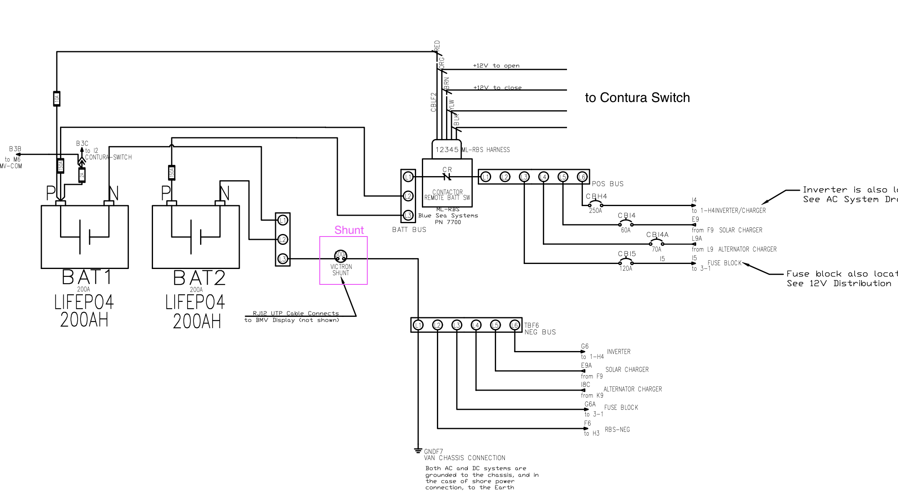
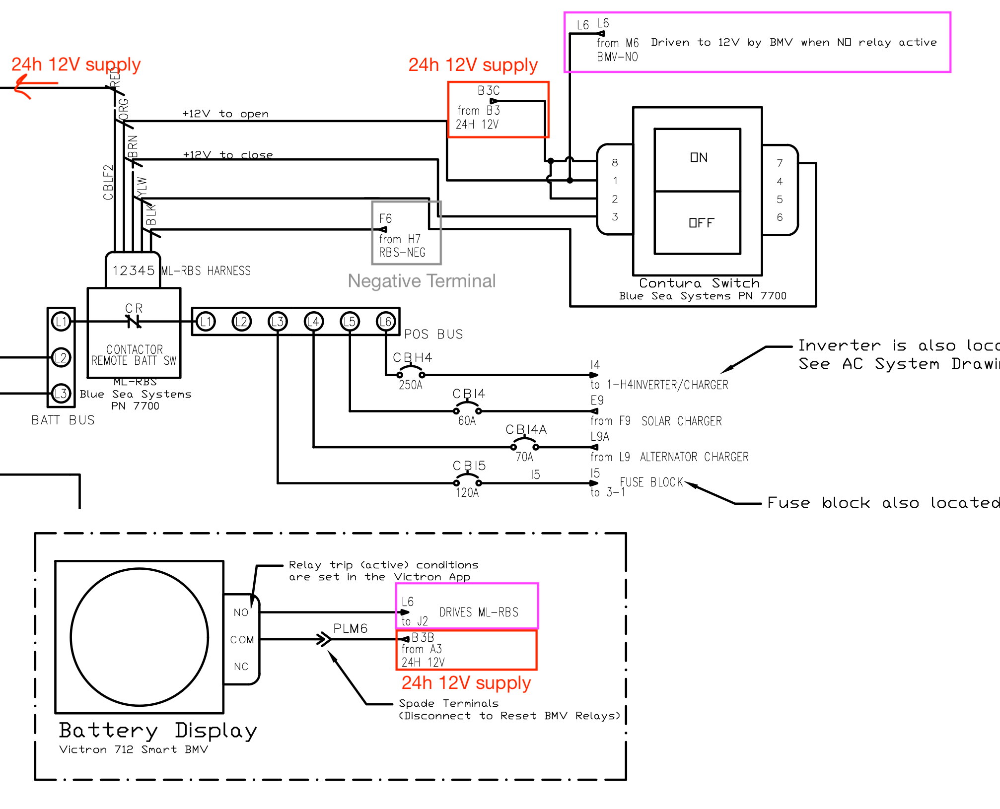
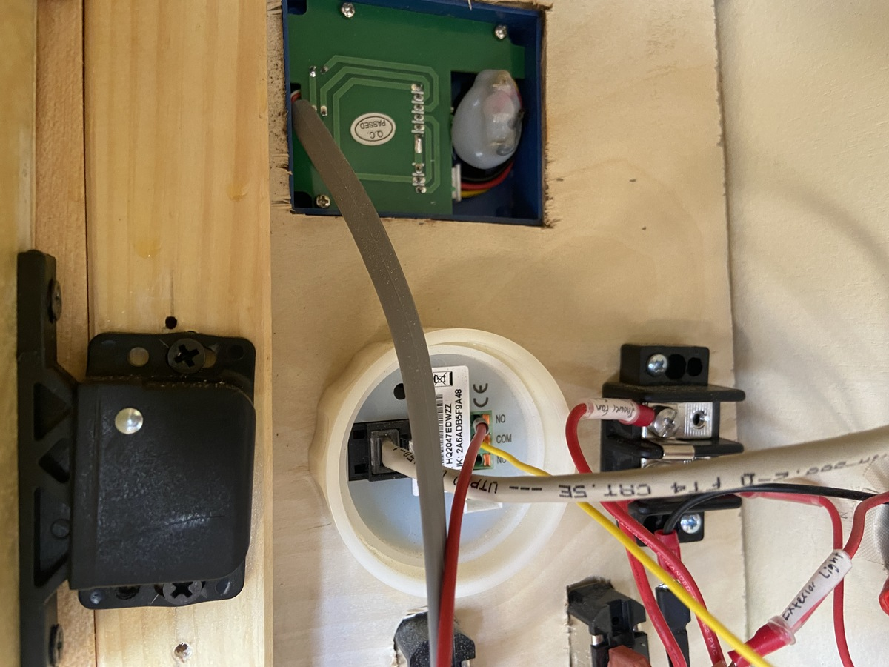
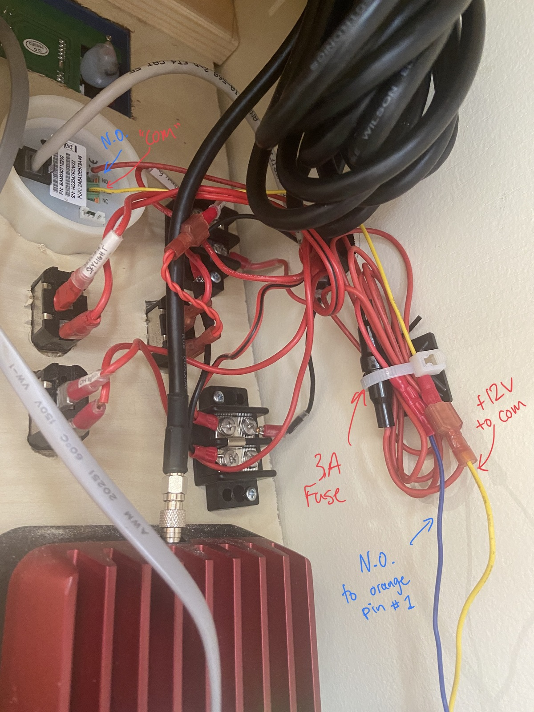
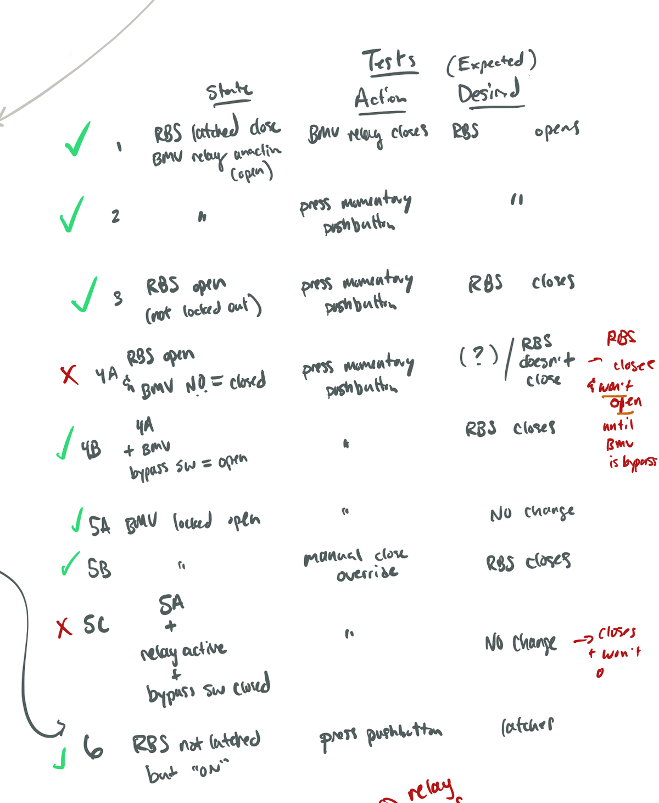

Mfg. / Part #: Victron BMV 712 Smart Tags: electrical
The Victron Battery Monitor (BMV) includes a shunt sensor that is critical to the protection and operation of the batteries. This device informs the user of the State of Charge (SoC), Voltage, and Current Draw, as well as provides the system-level protection (over/under voltage and low SoC) via the included Normally Open relay (which sends a signal to the Main Switch / Blue Sea ML-RBS)
The shunt is installed on the negative side of the paralleled batteries - all the current coming in or going out of the batteries is going through the shunt, which is how the BMV calculates the State of Charge. The BMV communicates to the shunt through the grey RJ12 cable.
Additionally there is a red wire connected directly to the + terminal of one of the batteries which gives the real time voltage. This also is how the BMV display is powered. This is fused at 2A with an inline fuse.

The BMV has two wires connected to the back. The red wire is connected to the COM port which is just the 12V supply for the normally open (NO) relay. The blue wire (which connects to the orange wire of the ML-RBS, hence the orange in the drawing), is connected to the NO port. Normally Open means 0V will normally appear here until the relay activates, closing, and then this pin becomes 12V. The 12V activates the relay of the ML-RBS to switch over and disconnect the battery from the system. This may happen so fast that you don’t even hear an alarm, just the relay latching sound of the ML-RBS.
The alarm should be set to activate before the protection setting so that you can diagnose the problem, switch off problematic loads, etc. For example the low voltage alarm should be set above the low voltage relay, and the high voltage alarm should be set below the high voltage relay.
⚠️ If the relay activates and trips the ML-RBS main switch, make sure that the relay is open before trying to reconnect the batteries with the main switch pushbutton. This can be done from the Victron app (preferred) or by disconnecting the blade terminals going into the COM port (disconnecting the 12V supply to the relay will force the NO port to 0V - which is the same as in the open position). For more info see the Note at the end of this document.


The red wire going into the N.O. relay connects to the orange pin #1 of the ML-RBS main switch. The yellow wire is the 12V supply into COM which has the spade terminal disconnect in-line.

During testing it was found that the RBS will undesirably latch-closed if there is 12V present on the pin 1 (orange) line - i.e. if the BMV NO relay is closed - and the close button is pressed on the ML-RBS pushbutton. During this state the “open” command on the pushbutton will not work. This is mentioned in the ML-RBS manual since the closed relay holds this pin 1 at 12V for more than 5 seconds which disables the functionality of the pushbutton.
If the orange line (pin 1) is held at 12V for more than 5 seconds the pushbutton functionality will be disabled
⚠️ If this state is entered you can disconnect the COM port on the BMV to force the relay output voltage to 0V. Then the pushbutton can be used as normal.
For testing purposes see below:

Full-size PDF CAD diagrams of the system can be found below:
Next: main-battery-disconnect